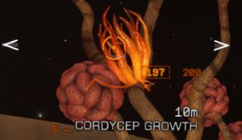
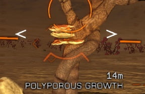
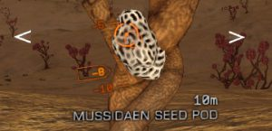
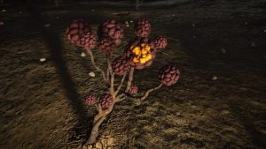

Mainly found in Ejecta Craters around Guardians Ruins areas. They are found on any type of world as long as the world has some form of Volcanism. Ejecta Craters can be recognised from orbital cruise. You usually see lines coming off of the crater, though sometimes these can be hard to see. Brain Trees have also been found in the lines radiating from these craters, and more rarely elsewhere on suitable planets.
The temperature range has to be between 200k up to 496k.
They do drop materials, but only the materials shown on the detailed surface scan of the planet they are on.
To locate a material node on the trees, you will have to look for 1 of 4 things.




For a more in depth, up-to date material guide, please refer to these research notes by CMDR Maligno.
When flying over a Guardians trees area, if you are above 3km from the surface you will see a very very small blue PoI appear on your radar. These PoI are the material nodes that spawn on the trees. You might alternately see a large POI that shrinks as you hover over it to a small dot.
Guardians Trees have also been found near nebulae, as can be seen on the Canonn map. There is also a list of known sites and you can report new findings to Canonn via our EDMC plugin.
Guardians Trees also produce rather a lot of noise. The noise has been described as sounding like Rhubarb thats growing.
Preliminary observations of Brain Tree “Phloem Excretions”, only recently observed by CMDR Maligno
Among the other three types of material nodes found in Brain Trees are Phloem Excretions. Preliminary observations of Brain Tree material node abundance seem to indicate that Phloem Excretions are a bit rarer than the other types. Scanning the Phloem Excretion with the on-board datalink scanner does not yield anything (as observed with the other types). Shooting the Phloem Excretion node shakes it loose from the Brain Tree, and scooping it with the SRV is known to yield grade 4 material. It should be noted that, unlike the other three types of material nodes, which grow on the “branches”, Phloem Excretions grow on one of the “Brain” portions of the Brain Trees.
List of locations available in a handy Google Sheet available here